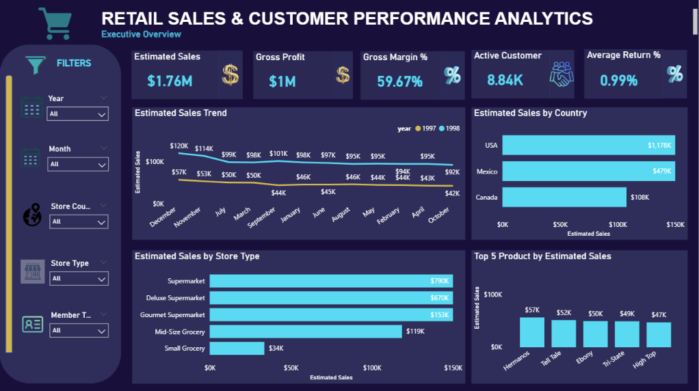

Retail Sales & Customer Performance Analytics Dashboard
This end-to-end Retail Analytics and Business Intelligence project transforms 269K+ sales transactions into actionable insights using MySQL, SQL, Power BI, and DAX. I developed a star-schema analytical model and a five-page interactive dashboard to evaluate sales, customer, product, store, geographic, estimated profitability, and return performance, identifying key business drivers, high-value customer segments, underperforming areas, and opportunities for performance improvement.